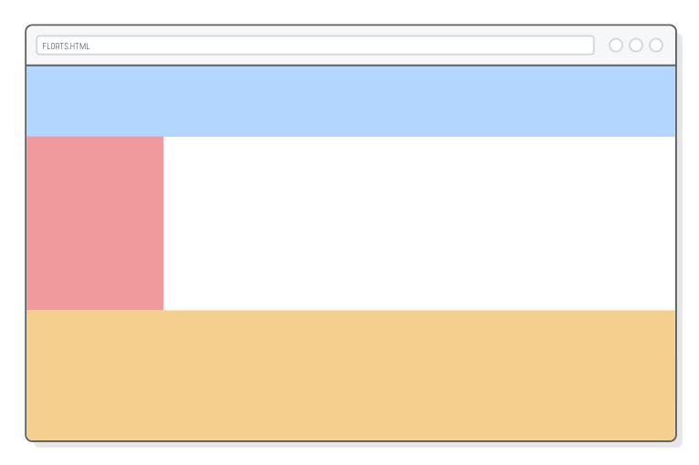
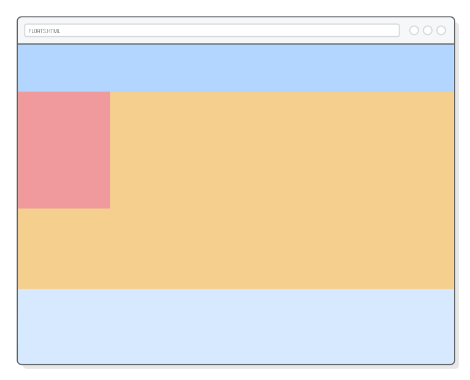
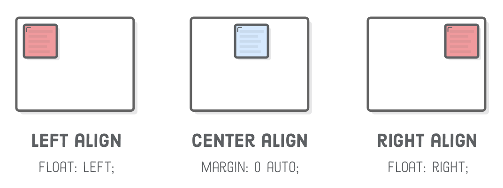
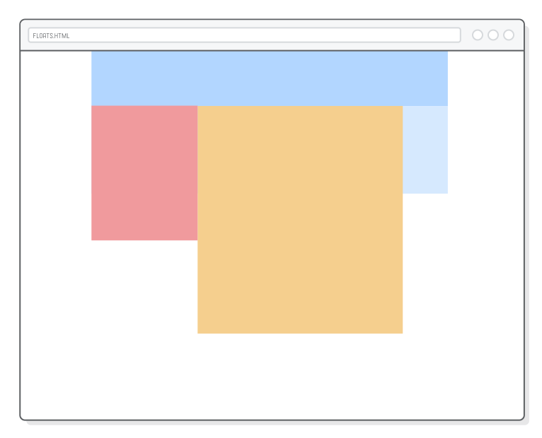
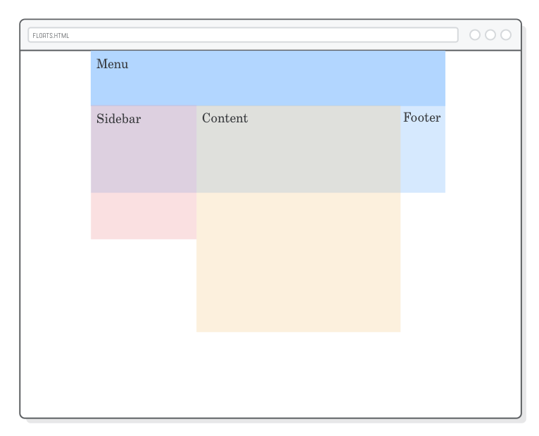
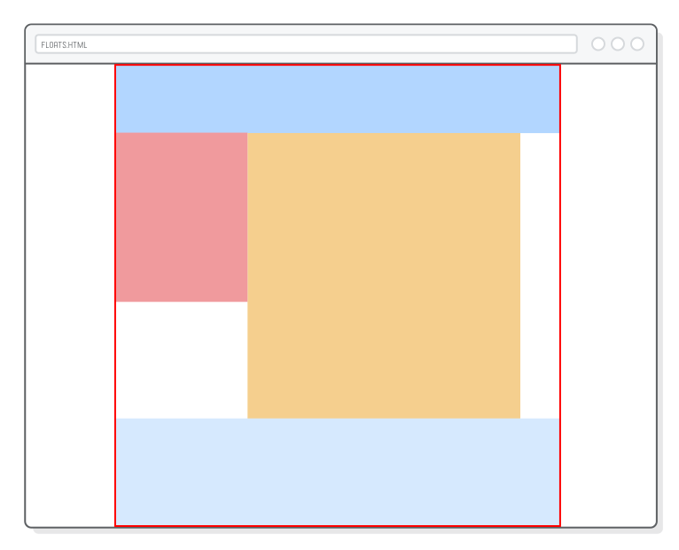
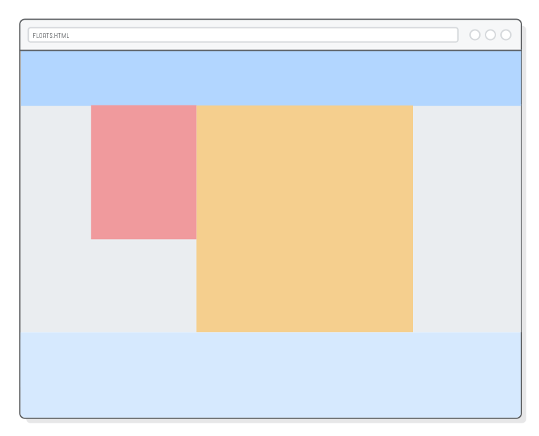
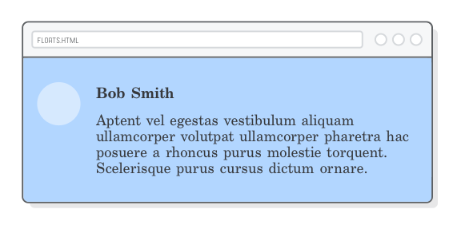

Um tutorial de dev web antigo (e uma introdução amigável para
layouts CSS)
Nos últimos capítulos, aprendemos como manipular o tamanho das
caixas e os espaços
ao redor delas, mas na maioria das vezes, estamos presos no fluxo
vertical da página. Elementos de bloco sempre aparecem verticalmente
um depois do outro, nos limitando efetivamente em um layout de coluna simples.
“Floats”, ou blocos flutuantes, permite que você coloque elementos
de bloco lado a lado ao invés de um em cima do outro. Essa é a grande
sacada. Assim podemos construir todo tipo de layout, incluindo menus
laterais, páginas com múltiplas colunas, grades e estilo artigos de
revistas com texto ao redor de imagens. Assim é como vamos finalmente
começar a criar páginas web de verdade.
Layouts flutuantes foram praticamente substituídos por
flexbox em sites modernos.
Mas, isso não significa que esse capítulo não vale a pena ser lido.
Durante muito tempo, floats serviram como a fundação
para a maioria dos websites na Internet, o que significa que você
definitivamente vai encontrar isso em algum ponto da sua carreira.
Talvez o mais importante, a natureza limitada do floats faz dele
uma introdução agradável para os layouts de CSS do que flexbox. Ao
invés de ficar sobrecarregado com todas as possibilidades do flexbox,
nós teremos a chance de focar mais no processo de construção de um
layout sofisticado para uma página web.
Configuração inicial
Este capítulo vai demonstrar o CSS flutuante com um projeto de
exemplo simples e bonito. Ao invés de trabalhar com o conteúdo HTML
propriamente, como temos feitos anteriormente, vamos estilizar um monte
de elementos <div> vazios. Vamos terminar com algo parecido como
o exemplo abaixo, que tem uma grande diferença das páginas web que criamos até agora.
Primeiro, crie uma nova pasta chamada floats, depois adicione uma
nova página web, chamada floats.html com o seguinte código HTML:
Isso vai nos fornecer a estrutura básica para a maioria das páginas
web na Internet. Temos um lugar para colocar um menu de navegação, uma
barra lateral, o conteúdo principal da página e um rodapé. Pense em tudo
isso como contêineres divs que você pode colocar o conteúdo da HTML neles.
Você não vai ver muito quando abrir o arquivo floats.html no
navegador por que elementos vazios tem tamanho zero. Vamos corrigir isso
na próxima seção.
O floats altera o layout padrão de uma página web, então nós devemos
iniciar provavelmente revisando o que exatamente é esse
“comportamento padrão”. Nós introduzimos isso em elementos de bloco
versus elementos de linha mas isso vai se tornar muito mais
importante agora.
Nós podemos ter uma visão melhor da nossa página de exemplo adicionando
algumas cores de fundo e definir o tamanho de cada uma dos elementos
<div>. Adicione isso ao arquivo styles.css:
Isso vai gerar um belo arco-íris, que não é exatamente o que nós
queremos, mas nos ajudará a demonstrar alguns conceitos importantes.
O importante aqui é que cada elemento de bloco preenche 100% do seu
elemento pai (<div class='page'>, nesse caso), e
aparecem verticalmente um após o outro. De novo, nós estamos
essencialmente limitados a um layout de coluna simples.
Normalmente, você quer deixar que a altura dessas caixas sejam determinadas
automaticamente baseada no conteúdo que elas contém; no entanto, estamos
mais preocupados agora com o controle do layout, então não vamos lidar muito
com um conteúdo real. Por isso nós vamos definir
explicitamente a
propriedade height.
Vale a pena dar uma olhada no que acontece quando diminuímos o tamanho de
um elemento. Atualize a regra .sidebar para ficar da seguinte forma:
O elemento da barra lateral (sidebar) ficou estreito, mas o resto
das caixas se manteve na mesma posição. Todos os blocos ainda estão
sendo renderizados verticalmente um depois do outro. Esse é o
comportamento que vamos alterar com o float.

Colocando um elemento flutuante
A propriedade float da CSS nos permite controlar
a posição horizontal de um elemento. Ao colocar o
sidebar para “flutuar” na esquerda, estamos falando para o navegador
para alinhá-lo no lado esquerdo da página. Vá em frente e
flutue nosso sidebar com a seguinte linha:
No entanto, isso não faz somente o sidebar se alinhar
a esquerda—isso também diz para os elementos no entorno que eles
podem fluir ao redor do sidebar ao invés de começar abaixo dele. É como
se o sidebar estivesse dentro do bloco .content, então qualquer marcação
HTML dentro de .content será embrulhado na caixa do sidebar. Isso nos
dá um layout estilo revista:

Você também pode colocar elementos flutuantes na direita, como
mostramos abaixo (no entanto vamos deixar nosso sidebar flutuando
na esquerda). Ou, se você estiver sobrescrevendo uma declaração
você pode cancelar com o valor none. Esses são os valores mais
utilizados para a propriedade float.
float: right; /* Alinhada à esquerda */float: none; /* Reverte para o fluxo padrão */
Agora nós temos todas as ferramentas necessárias para alinhar um
elemento de bloco: float para alinhamento a esquerda/direita e
auto-margins para alinhamento centralizado. Lembre-se que isso só
se aplicar a caixas de bloco. Caixas em linha são alinhadas com
a propriedade text-align, como discutido no
capítulo anterior.

Flutuando dentro dos pais
Caixas flutuantes sempre se alinharão à esquerda ou à direita
dos seus elementos pais. No nosso exemplo, o pai do sidebar
é <div class='page'>, que é tão grande
quanto a janela do navegador. Por isso nosso sidebar flutua
na extrema esquerda da página.
Vamos mudar isso definindo uma largura fixa no layout. Mais uma vez,
a técnica de centralizar com margem automática vem a calhar. Adicione
isso ao styles.css:
.page {
width: 900px;
margin: 0 auto;
}
Agora, podemos ver que o .sidebar flutua no lado
esquerdo do contêiner .page, oposto a borda da janela
do navegador.
Posicionar contêineres divs aninhados como esse é a forma de você
desenvolver layouts sofisticados para sua página web. Aqui, começamos
com .page centralizando qualquer coisa, depois alinhamos
a esquerda uma barra lateral dentro daquela página centralizada. As
coisas podem ficar cada vez mais complexas, mas nosso exemplo demonstra a
verdade universal sobre layouts CSS: tudo é uma caixa dentro de uma
caixa dentro de outra caixa.
Múltiplos flutuantes
Vamos examinar nosso estilo revista flutuante um pouco mais adicionando
uma largura explícita ao nosso bloco .content:
Isso vai demonstrar claramente que nossa barra lateral
está de fato dentro do bloco .content:
se você capturar a tela, terá uma imagem com 650px de largura,
diferente dos 850px (nossa barra lateral tem 200px a mais).
Este tipo de comportamento flutuante é muito bom para imagens, (que nós
veremos mais além), mas para
o layout da página, nós queremos que o bloco do conteúdo esteja próximo
a barra lateral ao invés de flutuando ao seu redor. Para isso, nós
precisamos dizer ao bloco do conteúdo para flutuar a esquerda também.
Adicione mais uma linha a regra .content:
Quando você coloca múltiplos elementos flutuantes na mesma direção,
eles irão se espalhar horizontalmente, muito parecido com o layout
de algoritmo vertical, exceto que está rotacionado 90 graus. O código
acima faz com nosso bloco de conteúdo inteiro apareça à direita da
barra lateral ao invés de empacotá-lo.

Isso nos dá um controle real sobre o alinhamento horizontal dos
nossos blocos de caixas. Tente brincar com os valores da
propriedade float tanto no .sidebar quanto no
.content, e você vai ver que nós já temos alguns
layouts distintos a nosso dispor:
Garanta que ambos estejam flutuando à esquerda antes de movê-los.
Isso cuida do layout para o bloco da barra lateral e de conteúdo,
mas pode cagar com nosso código no elemento .footer…
Depois de um flutuante
Você provavelmente já percebeu que nosso rodapé apareceu no
canto superior direito, logo abaixo do .menu.
Isso aconteceu porque as caixas flutuantes são removidas do
fluxo normal da página. A altura dos nossos elementos flutuantes
não contribuem para o posicionamento vertical do rodapé, então
ele simplesmente se pôs abaixo do último elemento que
não está flutuando.

Podemos ver isso mais claramente adicionando uma borda
ao redor do nosso elemento .page:
Perceba como a borda está somente ao redor dos elementos .menu
e .footer. É como se os elementos flutuantes não estivessem
lá. Tem duas formas de corrigir isso: limpando a flutuação e escondendo
os excessos (overflow).
Limpando a flutuação
“Limpar” um float é quando nós dizemos para um bloco ignorar
qualquer flutuação que apareça antes dele. Ao invés de fluir ao
redor de uma caixa flutuante, um elemento limpo sempre aparecerá
depois de qualquer flutuação. É como forçar uma caixa voltar ao
fluxo vertical padrão de uma página.
Podemos utilizar a propriedade clear para fazer
o .footer ir para baixo na página:
Normalmente, você vai querer limpar também os elementos flutuantes
à esquerda e à direita, como fizemos aqui, mas você pode escolher
limpar somente um ou o outro lado com os valores left
ou right. Note que a borda vermelha agora encapsula
tudo ao redor do rodapé, indicando que os elementos flutuantes
realmente contam para a altura do contêiner .page:

Dependendo do tipo do layout que você está tentando criar, essa
é uma perfeitamente aceitável. Nós poderíamos parar por aqui, mas
vamos explorar um pouco mais do comportamento da flutuação transformando
nossa página em um layout full-bleed, que tem cores de fundo
preenchendo toda a janela do navegador.
Veja o que acontece quando nós tiramos o menu e o rodapé do
elemento .page. Mude o elemento <body>
para ficar como está abaixo:
Uma vez que o .menu e o .footer estão
fora da nossa largura fixa da .page, eles usam o
tamanho total da largura da janela, que é exatamente o que
queremos para um layout full-bleed. No entanto, perceba
como a .page tem zero de altura de novo, apesar do
fato de que o rodapé limpa a barra lateral e o bloco de conteúdo.
Mais uma vez, somente os elementos dentro de .page
são flutuantes, então eles não contam para a altura. Em outras
palavras, mover o rodapé para fora do contêiner .page,
quebra nossa correção de clear.
Escondendo o estouro
Limpar a flutuação só corrige o problema da altura quando tem um
elemento dentro do elemento contêiner que nós podemos
adicionar a propriedade clear. Agora que nosso rodapé
está fora do contêiner .page, precisamos de uma outra
forma de fazer elementos flutuantes caber dentro da altura do contêiner.
A solução é a propriedade CSS overflow. Ao adicionar uma declaração
overflow: hidden a um conteiner div, estamos dizendo para
reconhecer a altura de qualquer elemento flutuante. Assim conseguimos
adicionar uma cor de fundo para nosso elemento .page, veja
como fica:
.page {
width: 900px;
margin: 0 auto;
overflow: hidden; /* Adicione isto */background-color: #EAEDF0; /* Adicione isto */
}
Você poderá ver agora um cinza claro como cor de fundo na
nossa .page, ao invés do branco padrão. Isso
ainda não é um full-bleed (já vamos ver isso na
próxima seção). O importante aqui é o comportamento do
overflow: hidden. Sem ele não poderíamos ver
a cor de fundo do contêiner .page porque ele teria
zero de altura.
Para resumir, quando você tem elementos HTML que não são flutuantes
no parte mais baixa de uma contêiner div, use a solução clear.
Se não, adicione uma declaração overflow: hidden ao elemento
do contêiner. A ideia por trás de ambas as opções é que você precisa de
uma forma de dizer ao navegador que ele deve incorporar a flutuação dentro
da altura dos elementos contêineres de forma que a cor de fundo apareça.
Layouts full-bleed
Agora nós queremos fazer com que a cor de fundo da .page
preencha toda a janela do navegador, sem mudar o alinhamento da nossa
barra lateral e bloco de conteúdo. O problema é, nossa .page
está ocupada centralizando tudo—não podemos utilizá-la para uma
cor de fundo full-bleed por que centralizar requer uma
propriedade width com valor explícito.

É hora de outro contêiner div> entrar na jogada.
Colocando uma caixa ao redor de .page permite continuar
centralizando as coisas enquanto temos um lugar para definir a propriedade
background-color. Mude nosso <body> para
ficar como o que está abaixo:
<body><divclass='menu'>Menu</div><divclass='container'><!-- Adicione isto --><divclass='page'><divclass='sidebar'>Sidebar</div><divclass='content'>Content</div></div></div><!-- Adicione isto --><divclass='footer'>Footer</div></body>
Lembre que o comportamento padrão da renderização de bloco é que os
elementos preencham a largura do seu contêiner. Então, assim poderemos
mover nossa declaração de background-color para uma regra
.container e assim ter uma cor de fundo full-bleed
(sem bordas).
Assim como na seção anterior, ainda precisamos da linha
com o overflow: hidden para forçar o
.container a ter atenção a altura dos
elementos flutuantes. Sem isso, não poderemos ver
nossa cor de fundo porque o .container tem zero de altura.
Isso nos dá três elementos <div> aninhados só
para o layout da nossa página: um .container encapsula
a cor de fundo para um layout estilo full-bleed, uma
.page com largura fixa, para centralizar tudo e
finalmente um .sidebar e um bloco .content
alinhado à esquerda. Esse tipo de aninhamento e alinhamento é bem
típico da maioria dos layouts de páginas web.
Flutuação para colunas com largura igual
Até agora, nós vimos um layout com uma barra lateral, um layout com
largura fixa, e um layout estilo full-bleed. Flutuações também podem
ser usados para criar layouts multi-colunas. Isso funciona quase como
nosso .sidebar e .content—só precisamos ter mais deles.
Vamos adicionar três colunas com largura iguais no nosso rodapé.
Atualize o elemento <footer>, conforme abaixo:
Nós podemos estilizar cada uma dessas colunas assim como
fizemos no resto da nossa página. Adicione a seguinte regra
na nossa folha de estilo styles.css:
.column {
float: left;
width: 31%;
margin: 20px1.15%;
height: 160px;
background-color: #B2D6FF; /* Medium blue */
}
Essa é a primeira vez que nós utilizamos valores com porcentagem
ao invés de valores explícitos com pixel. Porcentagens na CSS
são relativos a largura dos elementos pais. O resultado são três
colunas com tamanho automático ⅓ do tamanho da janela do navegador.
Redimensione a janela do navegador e você verá nossas colunas
crescendo e diminuindo de acordo com a janela. Isso é o começo
de um design responsivo.
Mesmo assim, não vamos perder o foco deste capítulo: flutuantes
permitem que nós empilhemos coisas horizontalmente ao invés de
verticalmente. Ao mudar a largura dos elementos nós estamos flutuando,
podemos ter todos os tipos de layouts diferentes, de barras laterais
à múltiplas colunas a grades!
Grades flutuantes
Que tal uma grade no rodapé ao invés de 3 colunas? De boa! Quando
não temos espaço suficiente para colocar um elemento flutuante
horizontalmente, ele é colocado em baixo da próxima linha. Tudo
que precisamos fazer é adicionar alguns elementos .column a mais:
O fundo do nosso rodapé é muito pequeno. Felizmente nós já sabemos
como corrigir isso. Vamos substituir o a altura do rodapé explicitamente
com outro overflow: hidden assim ele pode acomodar qualquer
número de itens de grade:
Você pode usar essa mesma técnica para fazer grades de qualquer tamanho.
Por exemplo, criar uma galeria de fotos com um monte de miniaturas é
simplemente colocar uma grade de item na .page ao invés
do rodapé e adicionar elementos <img/> a eles. Mas,
de novo, lembre que o flexbox é
a maneira mais moderna de criar esses tipos de layouts.
Uma pequena nota sobre convenção de nomes
O nome de classe .column não é exatamente a melhor escolha.
Esse cenário é um bom exemplo de por que nós evitamos
nomes de classes que se referem a aparência. "Coluna" não é muito bom
porque o conteúdo que ela contém não necessariamente precisa ser renderizados
em múltiplas colunas (ex. um layout para dispositivos móveis, terá somente
uma coluna). Um nome melhor seria algo como .footer-item, mas
vamos deixar isso pra você corrigir.
Conteúdos flutuantes
Existem dois aspectos que definem um layout de página web. Você tem
sua estrutura de página geral, que nós estamos trabalhando nesse capítulo
até agora. São coisas como, onde a barra lateral vai ficar, quão grande
o menu de navegação vai ser, etc. O outro aspecto dos layouts e a
estilização individual do componente HTML (seu conteúdo atual) que
vai dentro dessa estrutura de página abrangente.
O processo para o último é o mesmo, é apenas um pacote dentro de outro.
Vamos adicionar um conteúdo de exemplo ao nosso elemento .content
assim temos com o que brincar:
<divclass='container'><divclass='page'><divclass='sidebar'></div><divclass='content'><imgsrc='?'class='article-image'/><p>Ad netus sagittis velit orci est non ut urna taciti metus donec magnis
hendrerit adipiscing mauris sit a proin ultrices nibh.</p><p>Enim suspendisse ac scelerisque nascetur vestibulum parturient sed mi a
dolor eu non adipiscing non neque scelerisque netus ullamcorper sed
parturient integer.Eros dui risus non sodales ullamcorper libero a dis
cubilia a orci iaculis cursus.</p><p>Egestas at aliquam a egestas accumsan cum elementum consectetur conubia
tristique eu et vitae condimentum in ante consectetur suscipit a a duis
vestibulum gravida morbi sagittis.Parturient scelerisque facilisis
ullamcorper a a pretium a nisl parturient semper senectus accumsan ipsum
mus scelerisque eget ridiculus.Accumsan dolor a.</p><p>Ligula taciti vel primis sit a tincidunt habitant parturient parturient
in parturient ante nulla consectetur sem.Facilisis parturient litora.</p></div></div></div>
Nós temos uma imagem e vários parágrafos que podemos estilizar assim
como nossas divs estruturais. Por exemplo, vamos criar um layout estilo
revista colocando a imagem flutuando e deixando que o texto ao seu redor.
Adicione algumas regras a mais à nossa folha de estilos:
Note como nós temos um float dentro de outro float, e
tudo está funcionando muito bem. Estilizar uma página web é um processo
recursivo: você constrói uma estrutura de alto padrão para trabalhar,
então você preenche ela com seu conteúdo atual. Layouts mais complexo
podem precisar de mais uma ou duas camadas, mas a ideia é a mesma.
Escondendo o estouro (pelo conteúdo)
Você irá encontrar exemplo de layouts aninhados em todo lugar. Para
nosso exemplo final, considere um sistema de comentários para usuário.
Você terá uma imagem flutuando na esquerda com um cabeçalho e algum
texto próximo dela:

Vamos tentar criar isso no nosso rodapé. No nosso elemento .column
favorito, adicione o seguinte:
<divclass='column'><divclass='avatar'></div><h3class='username'>Bob Smith</h3><pclass='comment'>Aptent vel egestas vestibulum aliquam ullamcorper volutpat
ullamcorper pharetra hac posuere a rhoncus purus molestie torquent. Scelerisque
purus cursus dictum ornare a phasellus. A augue venenatis adipiscing.</p></div>
Outro caso de uso para nosso truque overflow: hidden.
Junto da nossa caixa .comment garanta que o texto ficará
"limpo horizontalmente" (isso não é um termo técnico) com a imagem flutuante.
Sem isso, a última linha do texto do .comment vai ficar por baixo
da imagem.
Em outras palavras, o overflow: hidden vai quebrar o
layout estilo-revista da seção anterior, mas de uma forma útil.
Resumo
Este capítulo foi nosso primeiro encontro mais realístico com
layouts de página web. Nós aprendemos como divs flutuam à esquerda e
à direita, como tratar os conteúdos depois de flutuações, e como combinar
flutuações com a técnica de centralizar com auto-margin do
capítulo de Modelo de Caixas CSS.
Essas são ferramentas que utilizamos para criar nossa barra lateral, grades e
um layout estilo-revista.
É importante não perder de vista o papel do desenvolvedor no processo
de criação da página web. Seu trabalho enquanto desenvolvedor web é
pegar um modelo lindamente projetado e tornar isso em marcação HTML e CSS
que o navegador irá apresentar para seus usuários finais. Floats
é um grande passo nessa direção, mas eles também se tornaram obsoletos
em favor do esquema de layout flexbox.
No próximo capítulo, vamos aprender como construir formas muito mais
complexas utilizando flexbox. As propriedades CSS serão outras, todas
novas, mas o processo é o mesmo desse capítulo: vamos continuar
alinhando caixas dentro de outras caixas, dentro de outras caixas e
assim por diante até que alcancemos o layout desejado.